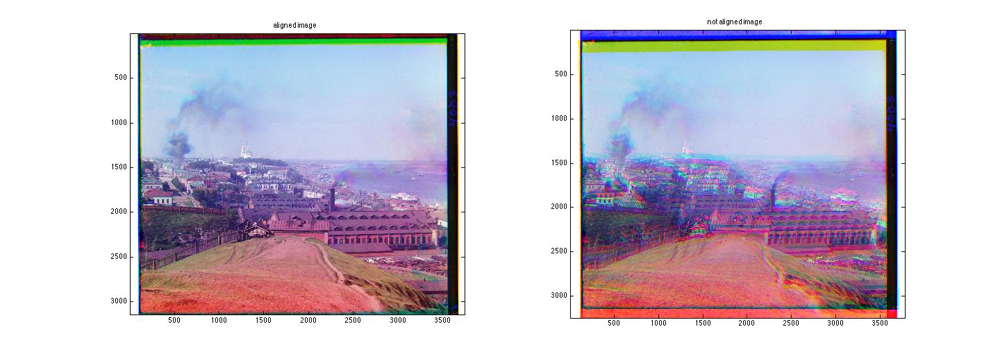
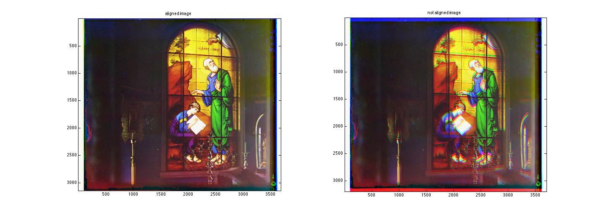
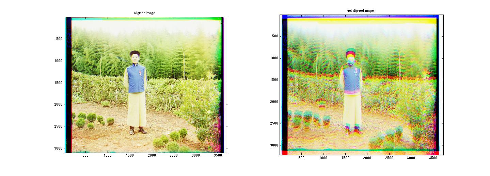
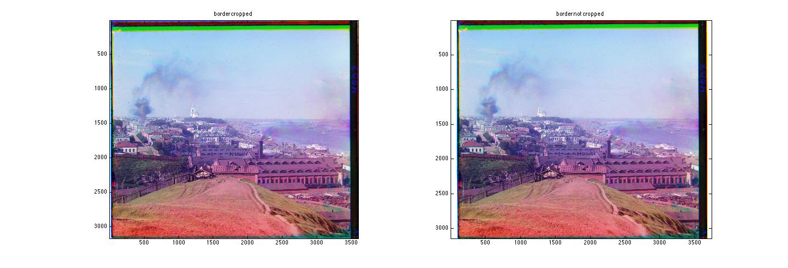
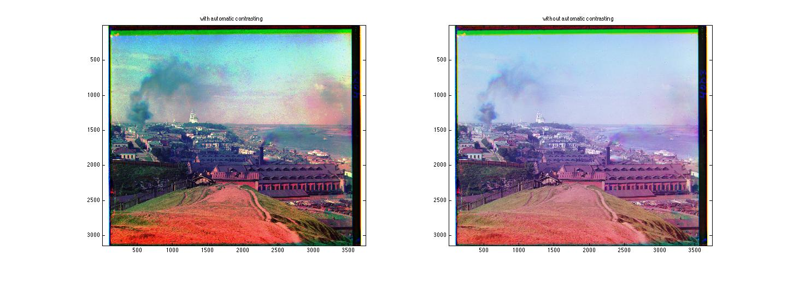
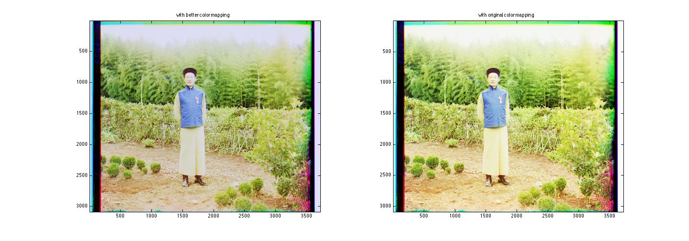
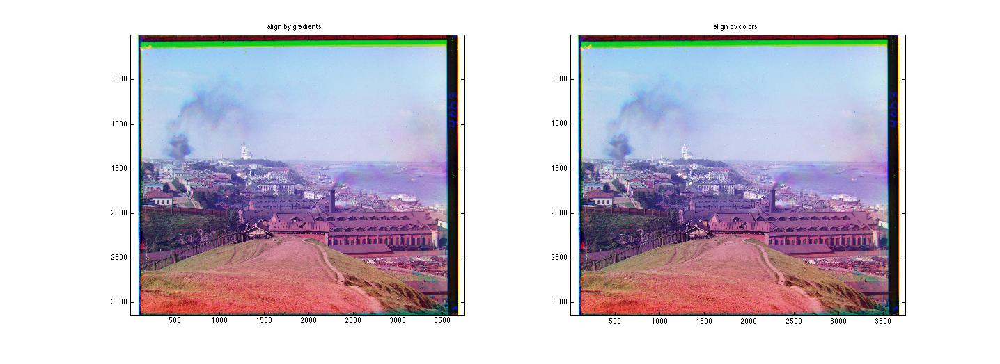
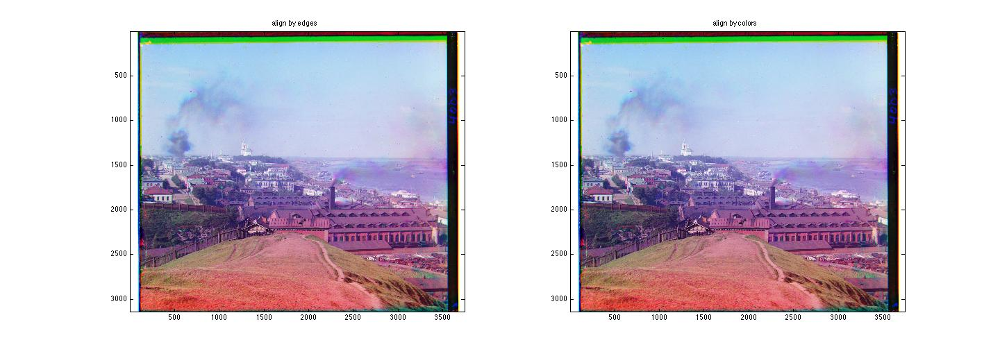

Project 1: Image Alignment with Pyramids
Description:
The algorithm is pretty simple. To composite a color image, we just
need to put three images of different channels together. To align two
images, the single-scale implementation just slide one image and
compute the NCC score for their common region. The displacement with
the highest score is selected as the final results. However, in
practice, single-scale implementation does not work well as it is very
slow and the displacement might be quite large. So all the results are
from multi-scale implementation. For the multi-scale implementation. I
first build a image pyramid (5 levels are used), and then align images
in a coarse-to-fine manner. For the highest level, I allow a large
displacement (10 pixels in my implementation), and for consecutive
levels, the displacement could only differ from the results from higher
level for a small amount (2 pixel offset is used). In this way, the
alignment is speeded up dramatically.
Results:



Discussion:
I found that the border of each image causes a lot trouble, so I cut
off the border of each image (10%) to compute NCC scores based on only
the central part.
Extra Credit:
- Automatic cropping: There are usually white borders surrounding
each image. So starting from the outmost line, I cut off a line if the
minimum gray scale is larger than 200. The process stops once a line
does not meet the criteria. I repeat this process for all four
directions (up, bottom, left, and right). The result is as follows:

- Automatic contrasting: I apply the histeq function to each channel and get results with more constrast:

- I explored a little bit about better color mapping and find that multiplying 0.9 to red and green channels for this image leads to slightly better result (the person looks more lively):

- I also tried using gradients and edges for alignment. I use Sobel filtering for computing
gradients and Laplacian filtering for computing edges. While I didn't
observe much improvement as the alignment based on color metrics is
already pretty good.

